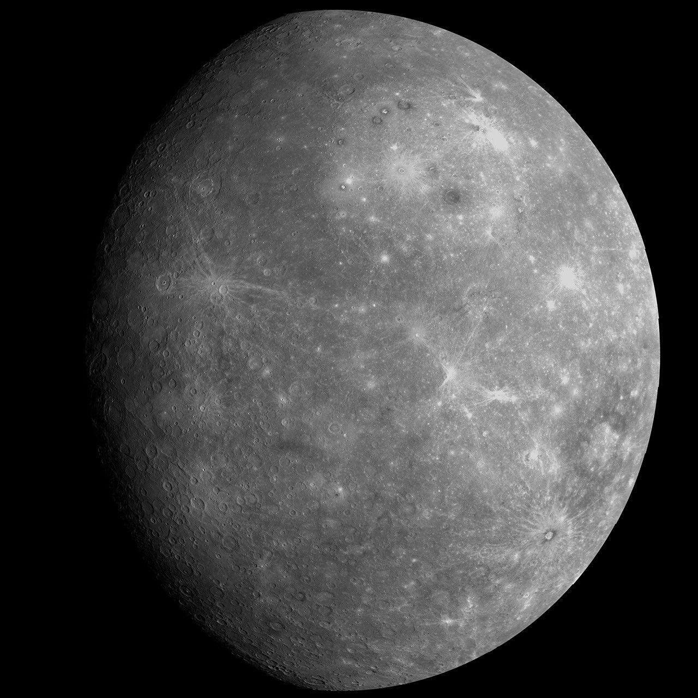

🌟お月さまって、毎晩どうして形がちがうの？
〜夜空の魔法、月の変身ショー〜

毎晩、ちょっとずつ変わる月。どんな形かな？
ねえ、エミリー
夜空を見上げたとき、「あれ？昨日と月の形が違う！」って思ったことない？
まるで、変身ヒロインみたいに姿を変えるお月さま。
ある日は丸くて、ある日は細〜くて、かくれんぼしてるみたい。
今日はね、その“お月さまの変身ショー”のひみつをいっしょに見ていこう♪
🌕 月の形が変わるのはなぜ？

太陽の光が当たる部分で、月の見え方が変わるんだ。
実はね、月そのものの形が変わってるんじゃなくて、「**太陽の光の当たり方**」が変わって見えるだけなんだよ。
イメージしてみて？エミリーが手に懐中電灯を持って、おうちのぬいぐるみを照らすと、ぬいぐるみの顔の見え方って角度によって違うよね。
月も、太陽・地球・月の位置関係で、見える明るい部分が変わるんだ。
🌒 月の“変身スケジュール”
月は約29.5日かけて、こんなふうに姿を変えるよ：
- 新月（しんげつ）：まったく見えない…まるで透明マント！
- 三日月（みかづき）：ヒロインが変身を始めたころの姿。
- 上弦の月（じょうげんのつき）：半分だけ見えてきた。わくわくしてきたね。
- 満月（まんげつ）：魔法少女、全開パワーで登場✨
- 下弦の月（かげんのつき）：また少しずつおやすみモードに。
- 新月へ…：ふりだしにもどるよ。
この一連の流れを「**月の満ち欠け**」っていうんだ。
毎日ちょっとずつ変わるなんて、まるで毎回ちがう衣装で登場するアイドルみたい♪
🌙 セーラームーンと月の力

月には不思議な力が宿っているのかも…！
エミリーは『美少女戦士セーラームーン』を知ってるかな？
あの物語では、月がとっても特別な存在だったよね。
月の女王、プリンセス・セレニティが持っていた“銀水晶（ぎんすいしょう）”の力は、まさに満月のような輝き。
月には昔から、神秘的な力があると信じられていたんだよ。
✨ 今日はどんな月かな？
エミリー、これから月を見上げるたびに、「今日はどんな姿かな？」ってワクワクしてくれるといいな。
月の形が変わることで、わたしたちは時間の流れや自然のリズムを感じることができるんだ。
夜空は、ちいさな教室みたい。
また次のレッスンも、お楽しみにね🌙✨
今日の宇宙の神秘 - Astronomy Picture of the Day
コンテンツを読み込み中...